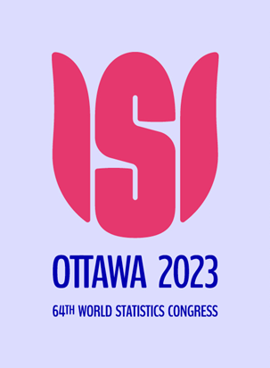

Conference Committees
International Program Committee (IPC)
- Alison Gibbs (Chair) - University of Toronto, Canada
- Bethany White (Deputy Chair) - University of Toronto, Canada
- Sotirios Damouras (Deputy Chair) - University of Toronto Scarborough, Canada
- Elinor Jones (Proceedings Editor) - University College London, UK
- Ayse Bilgin (IASE President) — Macquarie University, Australia
- Dani Ben-Zvi (IASE President-Elect) - University of Haifa, Israel
- Joachim Engel (IASE Past President) – Ludwigsburg University of Education, Germany
- Christophe Croux (IASC President) - EDHEC Business School, France
- Emily Somerset - University of Toronto, Canada
- Lehana Thabane – McMaster University, Canada
- Krista Wilde – University of Saskachewan, Canada
- Rosaria Lombardo - Università della Campania Luigi Vanvitelli, Italy
- Monday Adenomon - Nasarawa State University, Nigeria
Local Organizing Committee (LOC)
- Alison Gibbs (Chair) - University of Toronto, Canada
- Bethany White (Deputy Chair) - University of Toronto, Canada
- Sotirios Damouras (Deputy Chair) - University of Toronto Scarborough, Canada
Organizers and Sponsors
IASE and ISI
 The International Association for Statistical Education ( IASE), is the international umbrella organization for statistics education, and is the education section of the International Statistical Institute (ISI). IASE seeks to promote, support and improve statistical education at all levels around the world, and help the understanding and use of information involving statistics and probability. IASE fosters international cooperation, stimulates discussion and encourages and publishes relevant research. It disseminates ideas, strategies, research findings, materials, educational resources and information via its publications, international conferences, and websites.
The International Association for Statistical Education ( IASE), is the international umbrella organization for statistics education, and is the education section of the International Statistical Institute (ISI). IASE seeks to promote, support and improve statistical education at all levels around the world, and help the understanding and use of information involving statistics and probability. IASE fosters international cooperation, stimulates discussion and encourages and publishes relevant research. It disseminates ideas, strategies, research findings, materials, educational resources and information via its publications, international conferences, and websites.
 IASE meetings are lively, informal gatherings that draw together many people, professionals and students interested in the learning, teaching, and understanding of statistics and probability at schools and universities, in the workplace, and in professional and societal contexts, whether as part of statistics education, mathematics or science education, in connection with the work of official statistics agencies and other data producers, and in many other contexts.
IASE meetings are lively, informal gatherings that draw together many people, professionals and students interested in the learning, teaching, and understanding of statistics and probability at schools and universities, in the workplace, and in professional and societal contexts, whether as part of statistics education, mathematics or science education, in connection with the work of official statistics agencies and other data producers, and in many other contexts.
Visit the IASE website to find out more about IASE and its activities.

Join IASE to network with the world-wide statistics education community and obtain discounted registration to all international activities of IASE.
Visit the website of the 64th World Statistics Congress ( WSC64). This large conference takes place face-to-face in Ottawa, Ontario July 16–20, 2023. WSC64 is organized by the International Statistical Institute (ISI), the worldwide network of statisticians and those interested in statistics in all disciplines, of which IASE and IASC are a part.
IASC
 The International Association for Statistical Computing (IASC) has as its objectives to foster world-wide interest in effective statistical computing and to exchange technical knowledge through international contacts and meetings between statisticians, computing professionals, organizations, institutions, governments and the general public. The IASC pursues its objectives with special attention to developing countries. It promotes collaborative efforts within international, national, regional and other organizations and institutions having similar aims; it fosters evaluations of statistical computing techniques and programs and facilitates the exchange of computer programmess and meetings, particularly in conjunction with sessions of the ISI. The IASC publishes the journal Computational Statistics & Data Analysis and organises its own Conferences (IASC World Conferences, COMPSTAT in Europe, ARS Conferences on Statistical Computing in Asia) and Summer Schools as well as sections of the ISI Conferences.
The International Association for Statistical Computing (IASC) has as its objectives to foster world-wide interest in effective statistical computing and to exchange technical knowledge through international contacts and meetings between statisticians, computing professionals, organizations, institutions, governments and the general public. The IASC pursues its objectives with special attention to developing countries. It promotes collaborative efforts within international, national, regional and other organizations and institutions having similar aims; it fosters evaluations of statistical computing techniques and programs and facilitates the exchange of computer programmess and meetings, particularly in conjunction with sessions of the ISI. The IASC publishes the journal Computational Statistics & Data Analysis and organises its own Conferences (IASC World Conferences, COMPSTAT in Europe, ARS Conferences on Statistical Computing in Asia) and Summer Schools as well as sections of the ISI Conferences.
Visit the IASC website to find out more about IASC and its activities.
|
|
|